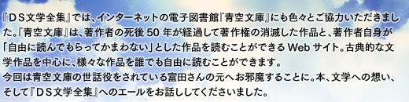

 |
 |
||
| 任天堂からソフト化の話が来たときは、どう思われましたか？ | |
| 任天堂のソフト『ＤＳ文学全集』の元ファイルとして、青空文庫を活かしてもらえるという話がきました。ちゃんとＤＳの環境で読みやすく仕立ててくれて、普通の文字コードにない文字は、上手く字の形を作って埋め込んでくれる。何の違和感もなく普通の本のように読める。他の出版社と協力して、あらすじを読めるようにしてある。作品の背景を解説した本もついている。そんな風に、色んな工夫がしてあってね。一番いいと思ったのは、あらかじめ100冊の作品が入ってるんだけど、さらに作品を追加できるようになってるんですよね。 |
| ニンテンドーWi-Fiコネクションで追加できますね。 | |
 100冊で閉じてしまう世界じゃなくて、今後どうなるか私にはわかりませんが、インターネットの上にある著作権を主張しない文章が読めたり、またビジネスとして料金がかかる文章が読めたりするんではないかっていう電子本の広い窓口を感じさせるものになっていて、心躍るような話ですよね。ニンテンドーＤＳは、大成功した電子的プラットフォームになっちゃったでしょう。子供からご老人までみんな持ってる。その人たちに対して、100冊で終わる閉じた世界ではなく、色んな可能性を感じさせる入り口を提供してると。 100冊で閉じてしまう世界じゃなくて、今後どうなるか私にはわかりませんが、インターネットの上にある著作権を主張しない文章が読めたり、またビジネスとして料金がかかる文章が読めたりするんではないかっていう電子本の広い窓口を感じさせるものになっていて、心躍るような話ですよね。ニンテンドーＤＳは、大成功した電子的プラットフォームになっちゃったでしょう。子供からご老人までみんな持ってる。その人たちに対して、100冊で終わる閉じた世界ではなく、色んな可能性を感じさせる入り口を提供してると。 |
| 今後の展開の可能性が楽しみな一本ということでしょうか。 | |
| 青空文庫は基本的に無料公開でやってるんですが、青空文庫の無料のデータを使って作ったＤＳソフトが、お金を払って買わなければならないのは何事だ、青空文庫に行けばただで読めるじゃないかと言う声が出てくると思います。でも非常に成功したプラットフォームで、あたかも本のように見ることができて、あらかじめ収録作品に選別がかかっていたり、音楽があったり、飾りというか周辺の味付けを施したファイルを提供してくれるっていうのには、知恵とか努力とかが加わってるんだから、非常に価値があることだと思いますよ。 |
| 確かにそうですね。 | |
| 我々は『青空文庫』というプロジェクトを、社会の大地の上に木を育てて行くようなことだと考えています。インターネットを介して世界のどこかからでも見られるというところから始まって、視覚障害を持つ方のためにテキスト読み上げソフトを使った枝も伸びる、弱視の方ために大きな字で見られる枝も伸びる、そのうち携帯電話という枝が伸び始めて、と色んな方向に伸びて行ってる訳ですよね。これらの無償のプロジェクトの他に、ビジネスとしてのプロジェクトがいくつか出始めています。今回は任天堂という強力なチームが、青空文庫のアーカイブをこういう風に共有できるようにしてくれた。私たちは無料でやっていますが、それではできないこともいっぱいあります。色んな工夫を付け加えたり、特殊な環境に作り込んだりっていうことの価値が、そこにはありますから。この世界は、ビジネスで回ってることが大半なんですよね。 |
| 共存共栄ですね。無料で提供する側と、技術やノウハウを使って付加価値を生み出すビジネスとの。 | |
| そうですね。最後に任天堂の開発の方から、「完成しました」と連絡があったときは、心から「大成功を祈ります」と返事しました。それは任天堂が儲かって欲しいということじゃないですよ。任天堂というチームが、先人たちの色んな知恵、芸術的な表現、思考の跡、そういうものが詰まったアーカイブを、どうやって良い形で個々人に届けるか、そこには私たちにはできない色んな工夫があると思う。なので今回のＤＳでのチャレンジには本当に期待してるし、成功して欲しいと思いますね。 |
| ところで、文学に馴染みのない人は、どうやってこの世界へ入って行けば良いでしょう？ | |
| とにかくまず読んで欲しいです。『ＤＳ文学全集』で読んでください（笑）。そういえば今回は『ＤＳ文学全集』を持っている人から、お試し本を4冊ダウンロードできるので、それで読んで欲しいです。読んでみて気に入らなかったら、もうそれでやめたっていいじゃない(笑)。 | |
| とりあえずお試しを、と(笑)。 |
| そうそう。読んでみて。 |  |
|
| では、N.O.M読者の方にメッセージをお願いします。 | ||
| 文学の世界というのは、人間が作って来た世界の中でも、非常に巨大な世界です。その世界への窓が、このソフトを通じて開いたことによって、もっと大きな世界を覗けるかも知れない。だからまず4冊の体験版で開いた文学への窓が、一体どんなものなのかを体験してみて欲しいです。今後はさらに、ニンテンドーWi-Fiコネクションで、新しく読み込めるファイルがもっと準備されるようです。あなたがＤＳ越しに見た窓というのは、大きく開く可能性を持っているので、まずは是非お試し版から体験してみてください。 |
| どうもありがとうございました！ |